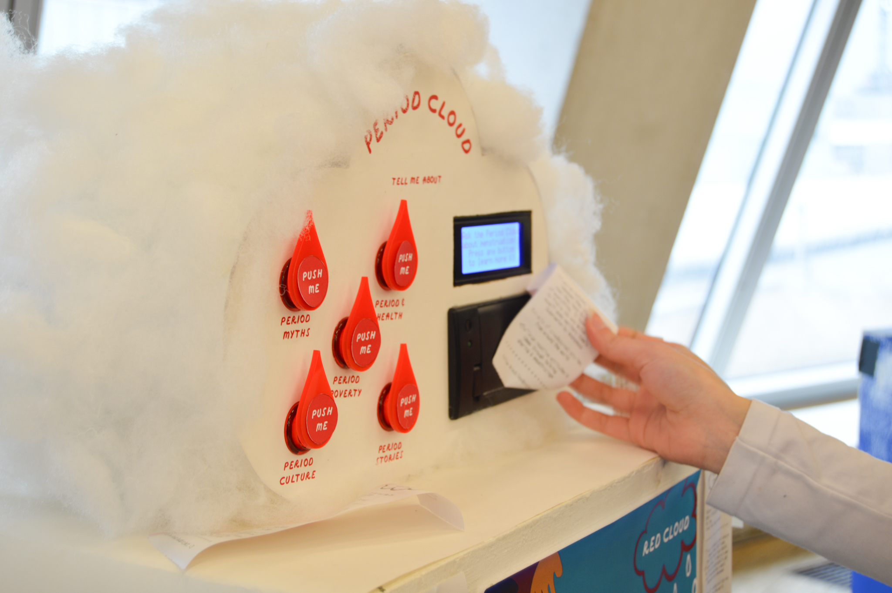
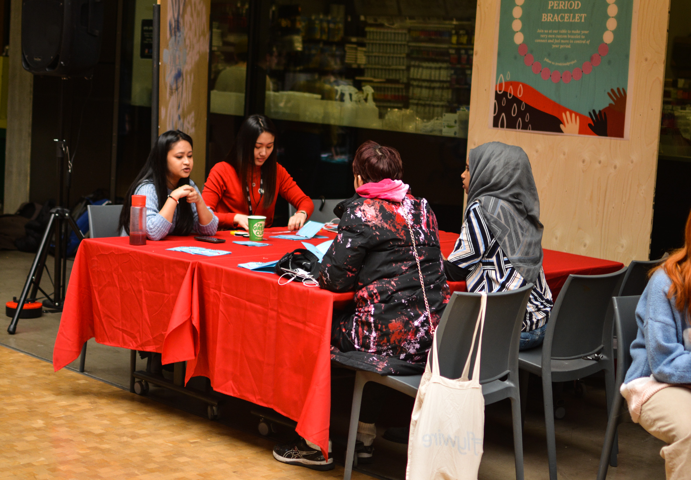

From Your Big Sisters book cover

The Period Cloud at Tate Exchange 2020

At the period tracking bracelet workshop
Red Cloud Project
Fellowship at Rights Studio:
Child Rights International Network (CRIN)
Rights Studio is a design fellowship program created by Child Rights International Network where graduates explore the intersection between art and activism for 7 months focusing on human and children’s rights.
We piloted the fellowship for the first time in 2019 as BA Graphic Design alumni from Camberwell College of Arts and founded the Red Cloud Project. The campaign includes an educational book, an interactive printing machine, workshops designed to break the shame and stigma around menstruation, as well as other exciting opportunities.
Read more about each below ↓
Book: From Your Big Sisters (pdf book version)
Website: From Your Big Sisters (web version)
Interactive Box: The Period Cloud
Workshop: Period Tracking Bracelet Workshop at MenstrUAL Festival
Podcast: Empower Period - Menstruation in the Media